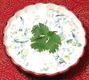

|
Cucumber & Yogurt SaladIndia - Kheera Rayta | ||||
| Serves: Effort: Sched: DoAhead: |
4 side * 2 hrs Yes |
Raytas make wonderful side dishes to moderate spicy Indian dishes, and this is the most cooling of the bunch. I've made up big batches to take to parties and it's always been well received. | |||
| Very similar salads are made in Anatolia, Caucasus (Turkish / Armenian version), the Stans, and Greece (Greek Version). | |||||
|
1-1/2 1/2 2 3 1 2 tt |
# t c T |
Cucumbers (1) Salt Yogurt (2) Scallions Chili Serrano Cilantro Pepper, black |
Make: - (2 hrs - 20 min work)
|